Activity 4:
Generating a sequence of all fractions between 0 and 1
CHALLENGE
Can we generate all the proper fractions?
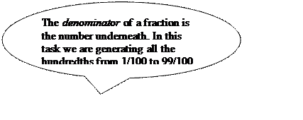 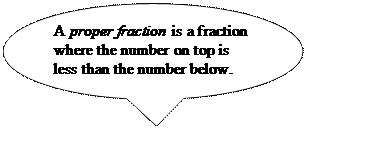
When given the box
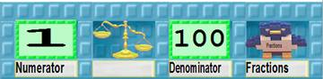
the Next Numerator robot should give the bird 99 boxes:
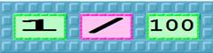
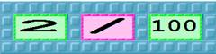
…
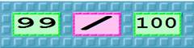
The robot can be trained to give the bird one box and will stop when the scale stops tilting towards the number 100.
If you need help training Next Numerator ask for pictorial instructions.
Predict. What sequence does Next Numerator produce when given
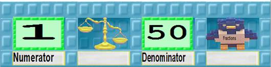
Write your answer here before running it.
Test. Was the result what you expected?
What sequence is produced when you change the number in the Denominator box to some other number, say 89?
Generalise. Explain in general what Next Numerator does.
Train a robot named Next Denominator that will change the box so that Next Numerator will work on the next denominator when finished. If you get stuck ask for the pictorial instructions.
Put Next Denominator and Next Numerator together to form a team. Package up your team in a box like this
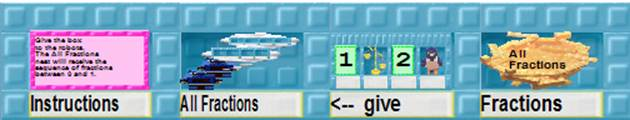
and save your work.
If the All Fractions team of robots ran forever would the bird ever be given two identical boxes (the same numbers as the other one)?
Explain.
Do you think all the proper fractions will be generated if the robots ran forever?
If so, how would you convince a friend?
If not, can you give a proper fraction that will not be generated?
Are there boxes that will be generated that are equivalent to this box?
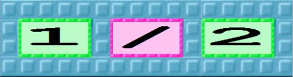
If so, give a few examples.
Load the No Copies team into ToonTalk. (It can be found in the Infinity section of the Tools section of the WebLabs web site.) Connect it to All Fractions with a bird and nest.
Connect the output from the No Copies team to the Match Maker robot from Activity 3.
Do you think all the fractions between 0 and 1 are countable?
Write down how you would convince a younger child of your answer.[KK2]
What do you think it means for something to be countable?
Activity 4, Task B: Training Next Numerator
|
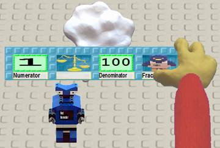 |
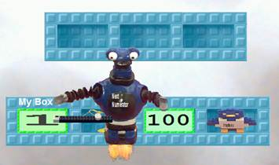 |
||
|
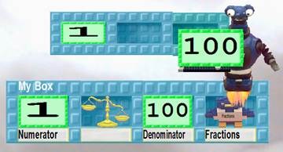 |
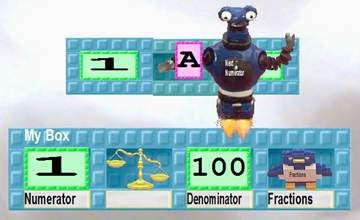
|
||
|
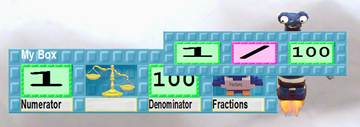 |
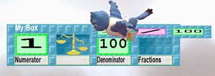 |
||
|
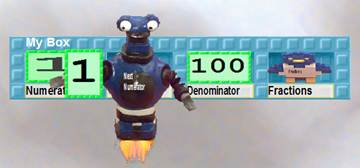 |
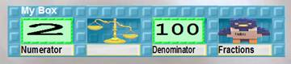 |
Activity 4, Task C: Training Next Denominator
|
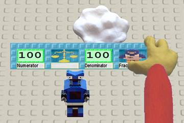 |
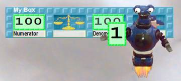 |
|
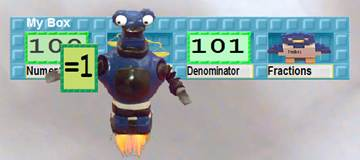 |
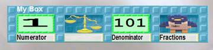 |
[KK1]It divides the first number by the second to obtain a fraction. It then uses the ToonTalk denominator operation to determine if the denominator is the same as the second number. E.g. the denominator of 3/6 is 2. Since 6 does not equal 2 the number is a duplicate.
This is a good way in ToonTalk to decide if the two integers are relatively prime.
[KK2]It is surprising that the rational numbers between 0 and 1 has the same cardinality as the natural numbers. But the generation of a sequence of all the fractions is a constructive proof.